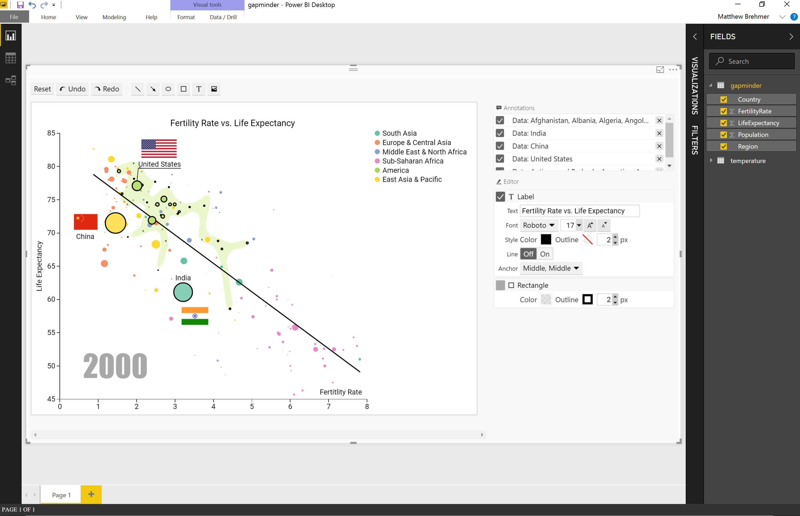
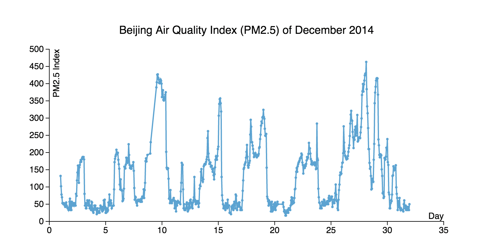
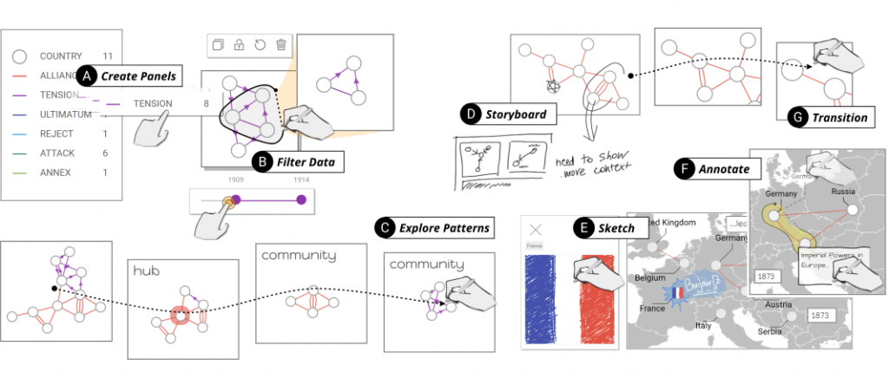
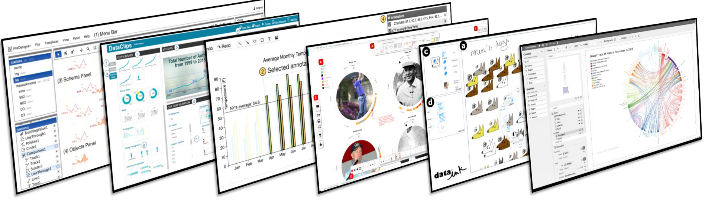

Expressive Visualization Tools for
Data-Driven Storytelling
Matthew Brehmer | mattbrehmer.github.io | @mattbrehmer
In collaboration w/ Bongshin Lee, Nathalie Henry Riche,
The EPIC Group @ Microsoft Research, interns, academic colleagues
Presentation at ASA SDSS 2019-05-30 · slides: mattbrehmer.github.io / talks / sdss190530
Interactive & Expressive Visualization Tools

 ChartAccent (2016) |
Timeline Storyteller (2017)
ChartAccent (2016) |
Timeline Storyteller (2017)
Charticulator (2018) | DataToon (2019)
Our Expressive Visualization Tools for Storytelling
· Not intended for exploratory data analysis
· Authoring, not design
· Correctly formatted, clean data
· Interactive browser-based tools: no programming required
· Anticipating alternative export and re-use scenarios
· Available to the public, free, open-source*
*DataToon public / open-source release is forthcoming.
Considerations for Storytelling with Visualization
· Fine control over visual encoding choices
· Informative annotations and captions
· Selective emphasis and highlighting
· Sequential reveal of information over time and space
Interactive & Expressive Visualization Tools
ChartAccent (2016) |
Timeline Storyteller (2017)
Charticulator (2018) | DataToon (2019)
Ren, Brehmer, Lee, Höllerer, and Choe.
In Proceedings of the 2017 IEEE PacificVis Symposium.


 chartaccent.github.io | github.com/chartaccent
“the annotation layer is the- Amanda Cox,
most important thing we do...
otherwise it’s a case of here it is,
you go figure it out."
New York Times Data Editor
Annotating Points and Values

Annotating Ranges
Annotating Sets and Other Annotations

Interactive & Expressive Visualization Tools
ChartAccent (2016) |
Timeline Storyteller (2017)
Charticulator (2018) | DataToon (2019)
Brehmer, Lee, Henry Riche, Tittsworth, Lytvynets, Edge, and White.
In Proceedings of the 2019 Computation + Journalism Symposium.
timelinestoryteller.com | github.com/Microsoft/timelinestoryteller
The Daily Routines of Famous Creative People
Story inspired by infographics by Podio and info we trust (RJ Andrews).Data source: Daily Rituals: How Artists Work by Mason Currey (2013)
A Design Space & Considerations for Expressive Storytelling.
Brehmer, Lee, Bach, Henry Riche, and Munzner.
In IEEE Trans. Visualization & Computer Graphics, 2017.
Timelines are visual representations of categorical event sequences.
How have people drawn timelines over the course of history?
... A survey of 250+ timelines and timeline tools.
timelinesrevisited.github.io
A Design Space & Considerations for Expressive Storytelling.
Brehmer, Lee, Bach, Henry Riche, and Munzner.
In IEEE Trans. Visualization & Computer Graphics, 2017.
Representation


Scale


Layout


serve different communicative goals.
Anticipate chronological or non-chronological narratives.
Incrementally reveal, selectively highlight & annotate to direct attention.
timelinestoryteller.com | interactive tool for the browser or Power BI
github.com/Microsoft/timelinestoryteller | open source
openvisconf.com/2017 | What Story Does Your Timeline Tell?
Interactive & Expressive Visualization Tools
ChartAccent (2016) |
Timeline Storyteller (2017)
Charticulator (2018) | DataToon (2019)
Ren, Lee, and Brehmer.
In IEEE Trans. Visualization & Computer Graphics, 2019.
Honorable Mention for Best Paper at IEEE InfoVis 2018.
Shortlisted for the 2018 Kantar Information is Beautiful Awards.
charticulator.com | github.com/Microsoft/Charticulator
Interactive & Expressive Visualization Tools
ChartAccent (2016) |
Timeline Storyteller (2017)
Charticulator (2018) | DataToon (2019)
Drawing Dynamic Network Comics With Pen + Touch Interaction.
Kim, Riche, Bach, Xu, Brehmer, Hinckley, Pahud, Xia, McGuffin, & Pfister.
In Proceedings of the 2019 ACM CHI Conference.
 aka.ms/DataToon
Ren, Lee, Brehmer, & Henry Riche.
In Proceedings of the 2018 BELIV Workshop (Evaluation & Beyond).
 Typical evaluation metrics (time, error) are not very relevant.
Post-deployment content analysis and chart reproduction studies.
aka.ms/renbeliv18
Closing Thoughts / Looking to the Future
· What does expressivity mean? How do we achieve it?
· Maximize expressivity without programming / mouse + keyboard?
· Visualization authoring for consumption beyond the desktop
· Beyond authoring: supporting design, exploration, data prep
Expressive Visualization Tools for
Data-Driven Storytelling
Matthew Brehmer | mattbrehmer.github.io | @mattbrehmer
In collaboration w/ Bongshin Lee, Nathalie Henry Riche,
The EPIC Group @ Microsoft Research, interns, academic colleagues
mattbrehmer.github.io / talks / sdss190530 | slides Presentation at ASA SDSS 2019-05-30